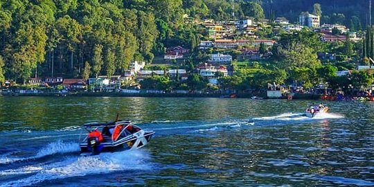
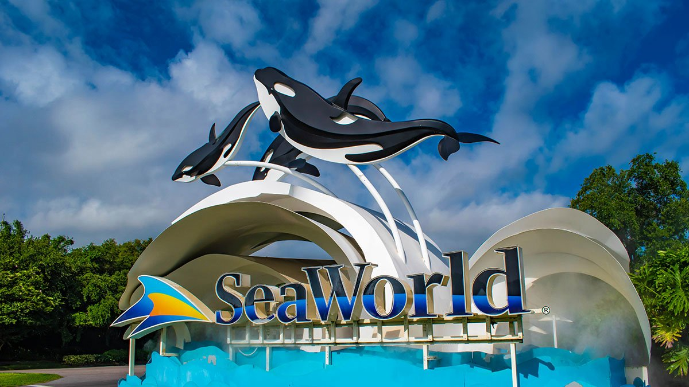
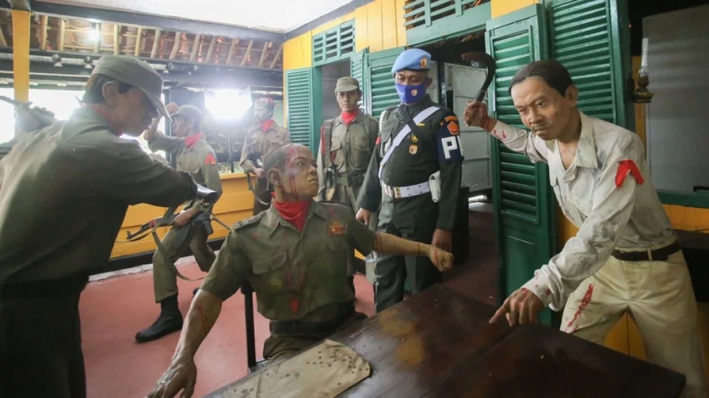

 Telaga Sarangan, juga dikenal sebagai Telaga Pasir adalah telaga alami yang berada di ketinggian 1.200 meter di atas permukaan laut dan terletak di lereng Gunung Lawu,Kecamatan Plaosan, Kabupaten Magetan, Jawa Timur.[1] Telaga ini berjarak sekitar 16 kilometer arah barat Kota Magetan. Telaga ini luasnya sekitar 30 hektare dan berkedalaman 28 meter.Dengan suhu udara antara 15 hingga 20 derajat Celsius. Lihat Detail
 Taman Impian Jaya Ancol adalah sebuah taman hiburan di Jakarta Utara, Indonesia. Taman ini dioperasikan oleh PT Pembangunan Jaya Ancol Tbk. lewat anak perusahaannya PT Taman Impian Jaya Ancol, yang pada gilirannya merupakan bagian dari grup Pembangunan Jaya. Taman tersebut menempati luas 552 hektare (5.520.000 m2) di wilayah Ancol, Pademangan, Jakarta Utara. Lihat Detail
 Lubang Buaya (harfiah "lubang buaya") adalah pinggiran kota di Cipayung, Jakarta Timur, Indonesia yang juga merupakan tempat pembunuhan tujuh perwira tentara Indonesia selama upaya kudeta 1 Oktober Gerakan 30 September. Terletak di pinggiran Jakarta dekat Pangkalan Angkatan Udara Halim Perdanakusuma. Lihat Detail Kembali Ke Atas